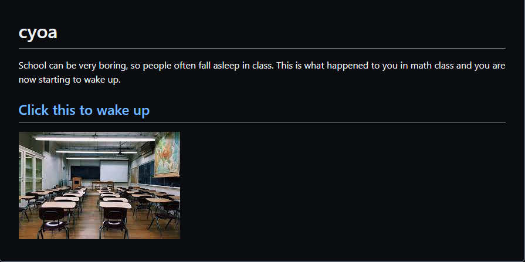

Choose Your Own Adventure (CYOA) Project
Context
In my SEP10 web design class me and my partner used github to create our own scenarios.
Content
For the cyoa project, we made an adventure where you wake up in math class and you have to escape. The first three choices you can make are to look around, go back to sleep, and to listen to the class and complete your work. Each choice will put you in a new situation and they all will eventually lead you to an ending.
Reflection
This project was simple and easy to complete but there were a few challenges that occurred while completing it. The biggest challenge that I faced was working on the project at the same time as my partner. At first there was some confusion with which file to work on and there would be times when we would work on the same file. Thankfully me and my partner communicated with each other and we managed to find our roles.
Takeaway
Cyoa has shown me why communication is so important. Since this was a group project, I had to communicate with my group in order to successfully complete the project. In the future I will try to find ways to communicate with the people I work with in order to make difficult tasks easier.
Link to the cyoa project
